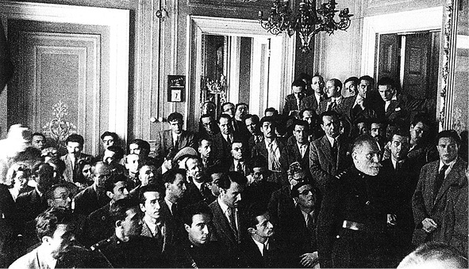

Turan Mahkemede
Milli Şef dönemi Ruslar’ın Almanları geri püskürttüğü bir zamanda 3 Mayıs 1944’te 23 kişi Turancılık gerekçesiyle içeri alınıyor ve bu kişilere işkence yapılıyor. Bu olay tarihe tabutluk işkencesinden dolayı “Tabutluk” hadisesi olarak geçiyor. Alparslan Türkeş, Reha Oğuz Türkkan, Nihal Atsız, Zeki Velidi Togan, Dr. Fethi Tevetoğlu işkence gören kişilerden bazıları. O 23 kişiden hayatta kalan iki kişi var. Onlarla konuştuk...
3 Mayıs 1944’te Turancılık davasından Tutuklanıp işkence gören 23 milliyetçinin hikayesi
“Tabutluk... Beton içine bir tabut büyüklüğünde oyulmuş bir yer. İkibin voltluk bir ampul. O zamanın emniyet müdürü Nazi Almanya’sına gitmiş ve bu helozonlu işkence ampullerini getirmiş. Bileklerimizden duvara asılıyoruz. Ayaklarımız yere değmiyor. Müthiş sıcak. Kapılar da kapalı. Tam bir tabut gibi. Ampul beyninizde kızdırılmış iğne batıyormuş gibi acılar veriyor. Bağırıyorsunuz. Tamam diyenleri bırakıyorlar imza attırıyorlar. Bir seferinde ‘Tamam tamam’ dedim alıp beni götürdüler. O zamanın Emniyet Genel Müdür Muavini Kamuran Çuhruh ve İstanbul Emniyet Müdürü Ahmet Demir. İlk girişimde doktor çağırdılar, yemin etmeye sağlığı müsait midir, değil midir diye. O da müsaittir deyince tükürdüm suratına. “Böyle mi yemin ediyorsunuz, işkence için mi yetiştirildiniz” falan dedim. Tabii, ‘götürün “mûtena” odaya’ dediler. Tabutlukların ismi mûtena odaydı. İkinci keresinde gittim. Hazırlamışlar ifadeleri. Ve ifadelere baktığım zaman ne kadar çekindikleri isimler varsa hepsini bu işin içine katmaya çalışmışlar. Celal Bayar, Adnan Menderes... Hiç alakaları yok tabii yırttım attım. Sonra sille tokat içeri attılar tekrar. İşte orada dört gece kaldıktan sonra çıkardılar, zaten bayılmışım...”

1944 yılında görülen davada Nihal Atsız ve Alparslan Türkeş de yargılanmıştı.
Yıl 1944...”Nihal Atsız ile Sabahattin Ali arasında görülen dava büyük bir mitinge dönüşür... Tam da o günlerde Rusya Almanya içlerine doğru ilerlemektedir. Rusya’nın Almanya’ya yürümesinin Türkiye için ne anlam ifade ettiğini anlamak için olayın öncesine ve sonrasına bakmak gerekiyor. Bir de Reha Oğuz Türkkan’ın gördüğü işkencenin perde arkasına. Yani 3 Mayıs’ı 3 Mayıs yapan şeye...
Olayın canlı “şahidleri”
Bize o dönemle ilgili tanıklıklarını ve yaşadıklarını anlatan üç kişi var. 23 kişiden hayatta kalan iki kişi; iddia makamına göre “elebaşı” Ord. Prof. Dr. Reha Oğuz Türkkan, “ihtilale yeminini kerhen yapmış (!)” olduğu için bir yıl yattıktan sonra dışarı çıkan Fehiman Tokluoğlu ve o dönemde küçük bir çocuk olan Nihal Atsız’ın oğlu Yağmur Atsız...
1940’lı yılların başlarında çıkan Bozkurt ve Ergenekon, isimlerinden de anlaşılabileceği gibi milliyetçilerin ve onların önde geleni olan Reha Oğuz Türkkan’ın çıkarttığı dergiler. Milli Şefe ve resmi görüşe aykırılıktan sık sık kapanan dergilerden sadece ikisi. Lise ve üniversite çağında bu dergilerle karşılaşan Fehiman Tokluoğlu’nun ifadesiyle muhalefet kavramının olmadığı bir dönemde bunlar “muhalefet eden” yegane dergiler. Dergi kapama alelade bir durum gibi gözüküyor o dönem için. Tek eleştirilebilen kurum belediyeler.
Dönemi anlamak için iki gelişmeye ve iki tavra göz atmak gerekiyor. Yıl 1939. Türkkan’ların aile dostu Cumhuriyet’in sahibi Yunus Nadi’nin oğlu Nadir Nadi gazetesinde yazdığı yazılarda “düzene uymalıyız” diyerek oldukça açık faşizm propagandası yapıyor. Reha Oğuz Türkkan ise çıkarttığı Ergenekon dergisinde faşizmin tehlikeli olduğu yolunda yazılar kaleme alıyor. Aile dostu Nadi’lerle aralarının bozulması buna dayanıyor. Bu arada, derginin yayınları Almanya ile ilişkileri zedeleyebileceği endişesi doğurmaktadır ve çok geçmeden dergi kapatılır. Çok değil birkaç yıl sonra aynı dergi bu sefer komünizm aleyhtarı yazılarından dolayı “Rusya” ile ilişkilerimizi bozuyor gerekçesiyle kapatılacaktır. Hassas dengelerin baş gösterdiği bir dönem... Bazıları bunu İnönü’nün temkinli politikasına bağlarken Reha Oğuz Türkkan da bunu İnönü’nün “korkak” dış politik tavrına yoruyor.
Hasan Âli komünist değildi
Reha Oğuz Türkkan Atatürk’ün milliyetçiliği önemsediğini ve Orta Asya’dan gelen öğrencileri koruduğunu, Türkçülükle ilgili çalışmalara ağırlık verdiğini anlatıyor. Fehiman Tokluoğlu da, “Tarih ve edebiyat dersi kitaplarını okuyan bir kişinin milliyetçi olmaması mümkün değil neredeyse” diyor. Fakat Tek Parti hükümeti milliyetçilik açısından kötü bir karneye sahip. En başta gelen konu ise solcu olduğu bilinen Kadro Hareketi’nin Hasan Âli Yücel tarafından kollanması ya da kadrolaşması, batının pek çok klasikleri tercüme edildiği halde milli kültür değerlerini taşıyan eserlerin görmezlikten gelinmesi...
Cumhuriyet’in sahibi Yunus Nadi’nin oğlu Nadir Nadi gazetesinde yazdığı yazılarda “düzene uymalıyız” diyerek oldukça açık faşizm propagandası yaptığı 39 yılında Reha Oğuz Türkkan, çıkarttığı Ergenekon dergisinde faşizmin tehlikeli olduğu yolunda yazılar kaleme alıyor.
Eleştirilerin dozajı 1943’te Rusya’nın Almanya’ya, oradan da Bulgaristan’a doğru yönelmesi ve İnönü’nün dış politikada denge dümenini Rusya’ya kıvırmasıyla daha da artar. Çünkü konjonktür değişmiş, devlet nezdinde solcular muteber sayılırken milliyetçiler de tehlikeli olarak görülmeye başlanmıştır. “Hasan Ali’nin, Falih Rıfkı’nın, Nevzat Tandoğan’ın manevraları bundan, yoksa bunlar komünist değildi. O yüzden onları korumaya başladılar, bizi tehlike olarak görmeye başladılar” diyor Reha Oğuz.
Sabahattin Âli ile Nihal Atsız davası sırasında çıkan olaylardan sonra tutuklamalar başladı
Atsız, Reha Oğuz’un çıkarttığı Ergenekon’da yazılar kaleme alır. Çok kuvvetli polemikleriyle tanınan Nihal Atsız’ın yazıları derginin sık sık kapatılmasına yol açar. Reha Oğuz’la Nihal Atsız’ın üslûp uyuşmazlığı ve Türkkan’ın yazıları dergide çıkmadan önce görme talebi ikilinin yollarını bir süre ayırır. Nihal Atsız Orkun’u çıkarmaya başlar. Bu arada pek çok milliyetçi dergi de sökün etmiştir. Orhan Seyfi Orhon Çınaraltı’nı, Dr. Fethi Tevetoğlu Kopuz’u çıkarmaya başlar. Zeki Velidi Togan’ın da bir dergisi yayınlanmaktadır...
İhtilal hazırlıkları!
Zeki Velidi Togan, Atsız’ı ve Türkkan’ı evine çağırır; birbirlerine hücum etmemelerini ister ve barışırlar. Bu haber Ankara’da bir ihtilal teşebbüsünün alt yapı çalışmaları olarak algılanır. İhtilal senaryosunun diğer ayağı ise şöyle kurulur: Doğu Türkistan’ın bağımsızlığını elde etmesinin ardından Prof Dr. Zeki Velidi Togan, içinde Atsız ve Türkkan’ın da bulunduğu 7-8 kişiyi evinde toplar ve genç Doğu Türkistan’ı desteklemek maksadıyla gerekirse oraya gidecekleri üzerine Kur’an ve Türk Bayrağı üzerine yemin ettirerek söz alır. Bütün bunlar savcının iddianamesinde hükümeti devirmek için yapılan örgütlenme ve yemin olarak geçecektir.
Şubat 1945 tarihli Tanin gazetesinde dava ile ilgili bir haber. Siyasi bir davanın bütün unsurları haberlere yansımış gibi.
Nihal Atsız, Orkun dergisinde o günlerdeki meşhur milliyetçi nutuklarıyla bilinen Başbakan Saraçoğlu’na açık mektup göndererek üst üste iki makale neşreder. Ana teması; “Ben milliyetçiyim diyorsun ama bak komünistler hükümetten himaye görüyor.”dur. Ve bu yazılarda devlette yerleşen komünistlerden de ‘ismen’ bahseder. Bunun üzerine ismi geçen kişi, Sabahattin Ali Atsız’a karşı dava açar. Ve tutuklamalara giden yol başlamış olur...
Dava, miting, tutuklamalar...
Ankara’da görülen dava kalabalık bir kitle tarafından izlenir, dava değil neredeyse mitingdir. Fehiman Tokluoğlu anlatıyor; “Atsız duruşma için Ankara’ya gelince Hukuk fakültesi öğrencileri Sait Bilgiç ve Cebbar Şenal, Atsız lehine masum bir miting düzenlemişler. Savaş yıllarının verdiği sıkıntıların birikimi ile buna halk da katılmış ve iş mecraından çıkarak büyük bir gösteriye dönüşmüş, hükümet aleyhinde sloganlar atılmış.” Onbinlerce kişi katılmıştır bu kitle eylemine. Davayı takip etmek için Ankara’ya giden Reha Oğuz Türkkan’ın mitingi tertiplemek için orada olduğu iddiasıyla suçlanacaktır. “Hükümeti eleştirmek, on kişinin bir araya gelmesi suç sayılıyordu o dönemde” diyor. Ve ekliyor; “Doğrusu evet, biz bu suç sayılan şeyleri gerçekten yapıyorduk.” Sonuç olarak ihtilale teşebbüs için örgütlenme iddiasıyla önce yüzlerce kişi içeri alınır, Türkçülüğü tescilli olduğu düşünülen 23 kişi Turancılık ve ihtilale teşebbüs suçlarından tutuklanır.
Kimdi Türkçülüğü tescilli bu 23 kişi? Başta Alparslan Türkeş olmak üzere altısı asker kökenliydi; Nurullah Banman (Yedek Astsubay), Zeki Özgür (Sofuoğlu), Dr. Fethi Tevetoğlu, Hasan Ferit Cansever, Fazıl Hisarcıklı, o dönem İstanbul Üniversitesi Türk Tarihi Profesörü Zeki Velidi Togan, Nihal Atsız, Reha Oğuz Türkkan, üç İTÜ Mühendislik son sınıf öğrencisi, Cihat Savaşver, Muzaffer Eriş, Fehiman Tokluoğlu (Altan), Cenap Şehabettin’in torunu İsmet Tümtürk, Hamza Sadi Özbek, şair Orhan Saik Gökyay, Hikmet Tanyu, Cebbar Şenel, Sait Bilgiç, Cemal Oğuz Öcal, Hüseyin Namık Orkun, Saim Bayrak ve Yusuf Kadıgil. Osman Yüksel Serdengeçti ise tanık olarak mahkemede bulunmuş fakat tutuklamalar sırasında o da “tabutlukta” işkence görmüş.
Pera Palas’ta ağırlayacak değiliz ya!
İstanbul Emniyet Müdürlüğü’nün bulunduğu Sansaryan Han’da ağırlanıyor 23 kişinin sivil olanları. Asker olanlar ise Tophane Askeri Cezaevinde. Fehiman Tokluoğlu’nun mahkemede “tabutluk” olayını doğrulaması üzerine mahkeme savcısı yüzbaşı Kâzım Alöç’ün söyledikleri şartların ağırlığını özetliyor. “Efendim, biz bunları reisicumhur namzedi olarak karşımıza getirmedik. Bunlar rejimi devirmeye ahdetmiş hâin, cani kimseler. Pera Palas’ta misafir edecek değildik ya! Tabii ki her türlü muameleyi göreceklerdir.” Ancak bir yatağın zar zor sığdığı tek kişilik hücrelerde ihtilat halinde uzun bir dönem geçiriyorlar. Bazılarının aileleri de içeriye alınıyor. Nihal Atsız ve eşi örneğin... Yağmur Atsız henüz çocuk ve dışarıda bırakılıyor. Alışıldık işkence türlerinden farklı olarak 1944 olaylarının anılmasında şifre kelime olarak kullanılan ‘tabutluk’lar var. Tabutluk işkencesi gören aslında üç-dört kişi. Fakat pek çoğunun ifadeleri “tabutluğun” önünde alınıyor. Yazının giriş bölümünde okuduğunuz gibi bunu en ağır olarak yaşayan kişi Reha Oğuz Türkkan. Tokluoğlu bazı kişilerin suçu Reha Oğuz Türkkan’a attığını ve onu zor duruma düşürdüklerini belirtiyor. Fehiman Tokluoğlu, SS subaylarına benzettiği zamanın Emniyet Genel Müdür Muvavini Kamuran Çuhruh’un emriyle tabutlukları görmüş olanlardan.
Alparslan Türkeş’in tırnakları sökülmedi
Sansaryan Han’da gerçekleşen diğer ‘sıradışı’ işkence de bir taraftan lağımın aktığı, akreplerin cirit attığı betondan mürekkep hücre. Burada Türkkan 2 gün kalıyor, Nihal Atsız ise bir hafta. Reha Oğuz Türkkan sivillere işkence yapıldığını, üniformalılara yapılmadığını söylüyor. “Hani derler ya tırnakları söküldü Alparslan Türkeş’in. Öyle olmadı deyince bana kızıyorlar. Kendisi bana da anlattı. Soruşturmada kerpeten getirmişler tırnaklarını sökmek için. Ama komiser, bu asker, başımıza bela olur, diyerekten buna engel olmuş. Biraz da kanatmışlar sonra da pamukla kapatıp bırakmışlar.” Reha Oğuz Türkkan’ın bir gözü neredeyse kör olma noktasına gelmiş. Kendisine diğerlerinden daha fazla işkence yapılmasını, 134 Azeri mülteciyi Ruslar’a teslim etmesi olayında İnönü’nün yüzüne karşı ağır sözler sarf etmesine bağlıyor. Türkkan’a göre yaşananlar aslında bir davadan çok İnönü’nün siyaset yapma biçimini sergiliyor.
Alparslan Türkeş ve İsmet İnönü
Fehiman Tokluoğlu ise mahkeme sırasında en cesur çıkışı yapan kişilerden biri olmuş. Alparslan Türkeş o günleri anlatırken “Fehiman davanın seyrini değiştirdi” dermiş Fehiman Bey o günkü soyismi olan Altan’ı değiştirmesini Tokluoğlu’nun aile ismi olması olarak açıklıyor. Velhasıl dönemin en büyük zorluğunu ve sonradan temyizde bozulacak olan en büyük mahkumiyeti Reha Oğuz Türkkan, Zeki Velidi Togan ve Nihal Atsız görmüş. Askeri Mahkeme’de görülen ve Askeri Yargıtay’a temyize giden dava, Reha Oğuz Türkkan’ın anlatımıyla İnönü’nün bütün etki ve baskı politikalarına rağmen beraatle sonuçlanır. İlginçtir, bu beraat kararı açıklanmadan Ruslar Boğazlar’dan üs isterler. Fehiman Tokluoğlu’nun anlattığına göre bu mahkumiyet sırasında Moskova Radyosu’nda İsmet Paşa’nın iki-üç öğretmen ve öğrenciyi içeri tıkmakla kendilerini kandıramayacağı mealinde konuşmalar geçer. Yani bütün şirinlik gösterileri boşa gitmiş, işkenceler yapanın yanına kâr kalmıştır.
Peki 1944’te başlayan dava bir daha resmi organlarda gündeme gelmemiş midir? Gelir. 1949’da Kenan Öner, Hasan Âli Yücel’e komünist dediği için Öner-Yücel davası başlar. Bu dava sırasında 44-45 davası da gündeme gelir. Gerisini Fehiman Tokluoğlu anlatıyor. “Beni İçişleri Bakanlığı’ndan çağırdılar. Kamuran Çuhruk hakkında soruşturma açılmış. Şahid olarak bildiklerimi sordular, tabutlukların krokilerini çizdirdiler. Birkaç gün sonra da Genelkurmay’dan çağırdılar ve Askeri Mahkeme’nin tutumu hakkında bilgi istediler. Bildiklerimi anlattım. Bunlar mahkemeye verildiler, beni de şahit olarak dinleyecektiler. 1950 seçimleri yapıldı, iktidar değişti, af kanunu çıktı ve hepsi kurtuldu.”
Reha Oğuz Türkkan sonraki dönemlerde İnönü ile karşılaşmalarını anlatıyor; “1960’larda başbakanken Amerika’ya geldi. O sırada Rumlar Ermenileri de yanlarına alarak Kıbrıs Meselesinden ayağa kalkmışlar. Hava alanında çok ağır bir nümayiş yapacaklarmış. Başkonsolosun paçaları tutuşmuş. Bütün derneklerle bağım olduğu için “Aman hocam bir karşı grup oluşturun” falan diye geldi. Biz de gittik havaalanında İnönü’yü karşıladık. Elini sıktım. Türkiye Başbakan’ı olarak elinizi sıkıyorum. İnönü olarak değil’ dedim. Ters ters baktı bana.”
Adnan Menderes, Türkkan’la Amerika’da bir gezide karşılaştığında “Artık gel Türkiye’ye. ‘Tabutlu Zebanileri’ni devirdik” der. Adnan Menderes seçim kampanyası sırasında kullanmış ‘Tabutlu Zebaniler’ terimini. “Bize işkence yapan Kamuran Çuhruh ve Ahmet Demir’in vali yapıldığını hatırlattım ona da” diyor Türkkan.
Ankara mitingini tertipleyen iki hukuk öğrencisi Cebbar Şenel ile Sait Bilgiç’in yolları da yıllar sonra bir yerde kesişir. Cebbar Şenel 27 Mayıs yargıcı, Sait Bilgiç de 27 Mayıs sanığı olarak.
Bilebildiğimiz kadarıyla 23 kişiden sadece ikisi hayatta. Fehiman Tokluoğlu ve Reha Oğuz Türkkan. Alparslan Türkeş’in sıklıkla “işte bana Turancılığı bulaştıran adam” diye bahsettiği Ord. Prof. Dr. Reha Oğuz Türkkan uzun bir süredir Amerika’da yaşadıktan sonra 1972’de geri dönüyor. Amerika’da bulunduğu sırada Cumhuriyet’e 68’e kadar süren “milliyetçi” döneminde Amerika Mektupları yazıyor Fehiman Tokluoğlu ve emekli bir mühendis olarak hayatını devam ettiriyor.
Aradan 56 yıl geçmesine rağmen 3 Mayıs unutulmadı. 3 Mayıs milliyetçilerin her yıl andığı bir olay niteliğinde. Başta MHP olmak üzere pek çok milliyetçi kurum bugünü ‘bayram’ havasında kutluyor artık. MHP Genel Başkan Yardımcısı Murat Şevkatli’nin dediği gibi MHP’nin temeli 1944’te atıldı.
Peki DSP Genel Başkam Bülent Ecevit’ın 1940’larda Reha Oğuz Türkkan’ın çıkarttığı Gökberi dergisinde şiirlerinin yayınlandığını biliyor muydunuz? Kaybedilen şeylerin geri dönmesini isteyen bir havadadır bu şiirler. “Ey Tuna! Türk’ün aksini sularında görmediğin için mi öyle hazin hazin akıyorsun?”
Fehiman Tokluoğlu’na o günden bugüne fikrinde bir değişiklik olup olmadığını sorduğumda “köprünün altından çok sular aktı” diye konuşuyor. Ne kadar doğru…
Ord. Prof. Dr. Reha Oğuz Türkkan (rahmetli) Turan Davası’nın merkezinde yer alan ve olan biteni anlatan kişi.
Ord. Prof. Reha Oğuz Türkkan:
Benimle çok uğraştılar
İlk günler... Bizi hücre odalarına ‘kapattılar. Bir yatak ancak sığıyor. Basacak yer de yok, pencere yok. Kimseyle görüşemiyorsunuz, kitap ve gazete okuyamıyorsunuz. O insanı delirtiyor. O sırada İnönü bir nutuk vermiş. İşte “bu caniler, bu hainler cezalandıracak” falan diye. Bütün gazete haberleri bizim aleyhimizde sanık yerine “suçlular” kelimesini kullanıyor. Bunun üzerine rahmetli babam İnönü’ye ağır bir telgraf çekiyor. “Sen mahkeme misin, daha mahkeme kararı vermeden nasıl suçlu dersin” diye.” Telgrafı çekmek için de postane postane dolaşıyor, nihayet birisi kabul ediyor. Tabii hemen erken emekliye sevk ettiler babamı.
O hücrede 8 ay kaldık. Üniformalı olanlar askeri cezaevinde kaldılar. Sivillere işkence yapıldı. Üniformalılara yapılmadı. Tabutluk işkencesinde rekor bende kaldı. Üç gün dört gece kaldım. Öteki arkadaşlar ya bir gün ya da birkaç saat kaldılar, bazıları çok korktular maalesef, isim vermeyeceğim. Kapısının önüne gelip hemen imza etmişler ifadeleri. Tabii kilit bende olduğu için hem Atsız’ı hem diğerlerini tanıyorum. Benim üzerimde çok uğraştılar.
***
MHP Genel Başkan Yardımcısı ve Ar-Ge sorumlusu Murat Şevkatli:
MHP’nin temelleri atıldı
1944’te aydın ve genç milliyetçiler tutuklanmış ve eziyet görmüşlerdir. Bu hukuksuzluk ayrıca birçok insanımızı da mağdur ve tedirgin etmiştir. 3 Mayıs, Atatürk’ün Hakk’ın rahmetine kavuşmasının ardından unutturulmak istenen Türk milliyetçiliğini ve onun haklı fikirlerini hatırlatmış ve Türk milliyetçilerinin birliğini sağlamış, bir kendine geliş hareketinin başlangıcını teşkil etmiştir... 3 Mayıs’ı kimi zaman ismi değişik olsa da özünde asla değişiklik olmayan MHP’nin temellerinin atıldığı bir olay olarak görüyor ve halen büyük önem veriyoruz. Dikkat ederseniz biz aslında kötü bir hadiseyi 3 Mayıs Türkçüler günü olarak bir bayram havasında kutlamaktayız. Hatta 1944 yılında milliyetçi aydınlar Turancılık suçlaması ve nizam düşmanlığı ile yargılanmasının emrini veren İsmet İnönü’nün oğlu Erdal İnönü Beyefendi 1993 yılında yapılan Türk Cumhuriyetleri Dostluk ve Kardeşlik İşbirliği Kurultayı’nda rahmetli Başbuğumuz Alparslan Türkeş ile birlikte örste demir dövmüştür. Bu bizi ziyadesiyle memnun etmişti; zira Erdal İnönü sanki 44’ün hatasını tarihin huzurunda telafi etmişti.
***
Fehiman Tokluoğlu (tutuklanan 23 kişiden biri, mühendis):
“Herkesi beraat ettirseler fiyasko olurdu”
Mahkemede verdiğim ifadenin en enteresan tarafı, tabutluklar konusunu cesaretle dile getirmem oldu. Mahkeme Başkanı Yusuf Ziya Yazgan Paşa “Evladım ne güzel ifade verdin, bunları ne diye karıştırıyorsun?” dedi. Ben de “Siz sordunuz” diye cevap verdim. Savcı Yüzbaşı Kâzım Alöç kükrer gibi kalktı ve aynen “Efendim, biz bunları reisicumhur namzedi olarak karşımıza getirmedik. Bunlar rejimi devirmeye ahdetmiş hâin, cani kimseler. Pera Palas’ta misafir edecek değildik ya! Tabii ki her türlü muameleyi göreceklerdir” dedi, daha doğrusu ağzından kaçırdı. Tabii bütün bunlar zapta geçmiyor. İsmet Rasin’in avukatı Kenan Öner ayağa kalktı ve “Efendim nasıl oluyor da bu ifadeler zapta geçmiyor?” deyince duruşma hâkimi çareyi “duruşma bitmiştir” deyip içeri çekilmekte buldu... Olayın üstünden 56 yıl geçti. Benim görüş ve kanaatim şudur: O günlerde 2. Dünya Savaşı’nın sonu görünmüş ve Rusya’nın galipler arasında olacağı belli olmuştu. Savaş sonrası görüşmelerinde Rusların eline koz vermemek düşüncesiyle İsmet Paşa “...bakın biz Türkiye’deki Rus aleyhtarı cereyanları tasfiye ediyoruz” gibi bir mesaj vermek istiyordu... Fakat Rusya buna kanmadı. Boğazlardan üs istedi. Anlaşıldı ki bütün bu koparılan fırtına Rusya’yı hiç etkilememişti.
Bizim davada da, koparılan bunca gürültüden sonra herkesi beraat ettirseler fiyasko olurdu. Elebaşıları sayılan Reha Oğuz Türkkan ve Zeki Velidi Togan’a 10’ar yıl, Nihal Atsız’a 6 yıl “ibret-i âlem”olacak ağır cezalar verdiler ve diğerlerine de beraat verildi. Bu ummadığımız bir sonuç idi. Askeri Yargıtay kararı bozdu.
Yağmur Atsız (Nihal Atsız’ın oğlu)
O Paris’teyken
“1944 Olayları” boyunca en çok işkence gören şahıs bildiğim kadarıyla Nihâl Atsız değildir. Eğer yanılmıyorsam Üsteğmen Alparslan Türkeş, Prof. Dr. Zeki Velîdî Togan, Zeki Sofuoğlu, Dr. Necdet Özgelen yahut Dr. Mehmet Külahlıoğlu gibi tutuklular daha ağır eziyetlere mâruz kalmışlardır.
Nihal Atsız’ın oğlu Yağmur Atsız dava sırasında 4,5 yaşındaymış.
Ben o 1944 Mayısında henüz dört buçuk yaşında küçük bir çocuktum. Bir ikindi üzeri sivil polislerin annemi almaya geldiklerini hayâl meyâl hatırlıyorum. Babamın bundan birkaç gün önce Ankara’da tutuklandığından tabii ki haberim yoktu.
O zamanlar Maltepe şimdiki gibi 350 bin nüfuslu kasaba azmanı bir heyûlâ değildi. 3 bin 290 nüfuslu ve Yahya Kemâl’in: “Artık enginleşince mâvi sükûn, / Artıyor, gökyüzünde yıldızlar... / Gece gittikçe başka hâl alıyor. / Suyu ürpertiyor çıkan rüzgâr. / Şimdi sahil boyunca Maltepe’yi / Köpüren mavi dalgalar yalıyor.” şeklinde şiirler döktürdüğü harikulade bir İstanbul sayfiyesiydi. Bütün evler bahçeli veya kuyulu ya da sarnıçlıydı. Şeyhülislâm Feyzullah Efendi Köşkü’nün hemen iki yüz metre kadar ilerisindeki evimizin önünde bayağı geniş bir bakla tarlası uzanıyordu. O tarlayla evimiz arasından incecik bir dere akardı ki Ayamama’dan gelen Gülsuyu Deresi değildi. O dere birkaç yüz metre daha doğudan akardı. Benim bu bahsettiğim, Bekir Çavuş Namazgâhı’ndan çıkan dereydi. Sivil memurlar gelirken tesadüfen bizde bulunan misafirler arkadaki bahçelerden dolanarak işte o bakla tarlasına canlarını dar atıp gizlendiler. Sonra da savuştular. Ben akşama doğru evde yapayalnız kalmıştım. Gün devrilirken komşular beni almaya geldiler ve bana aylarca baktılar.
Annem 72 gün, babamsa 18 ay tutuklu kaldı. Ama neticede 23 tutuklunun hepsi beraat etti.
1944 olayları, yahut olayı, ebeveynimi mâlî yönden de son derece ağır koşullara itmiştir. Benim ecdadım, hem baba hem ana tarafından zabittir. 93 Harbi, Balkan Harbi ve Birinci Cihan Harbi felâketlerinden sonra zâten yıkıma uğrayan ailem, bu tutuklamalar ve bakanlık emrine alınmalar sonucu çok, ama çok zor duruma düşmüştür. Babam, bu nâhoş şartların da sâikiyle daha cezaevinde başladığı “Bozkurtların Ölümü”nü tahliye edildikten sonra Maltepe’de tamamladı. Onun sarı saman kâğıtlı bir kalın müsvedde defterine yine sapsarı ve yaklaşık 40 santim uzunluğundaki reklam amaçlı bir kurşunkalemle o yağmurlu ve mağmûm kış ikindileri ve akşamüstleri deliler gibi nasıl bölüm bölüm romanı tamamlamaya uğraştığını anımsıyorum. Ortalık karardıktan sonra da o gün yazdıklarını annemle bana okurdu. Roman bittiği zaman o koskoca kalem kibrit çöpü kadar kısalmıştı. Demin kalkıp baktım. Bitiş târihi olarak metnin sonuna şöyle yazmış:
“13 Nisan 1946
Saat: 21.00
Maltepe”
Babam tahliye edildikten sonra -anlaşılabilir sebeplerden ötürü- çok asabîydi. Normal olarak ne içkiye, ne sigaraya pek bir düşkünlüğü olmuştur. Fakat o aylar sürekli olarak hem rakı hem sigara içerdi.
1944 olayı elbet bütün badireleri yaşayanlar üzerinde ömür boyu silinmeyecek izler bırakmıştır. Ama “kurbanlar” epeyi kısa zamanda işi biraz da “matrak” tarafından ele alarak bir tür “ruhî savunma mekanizması” oluşturdular zannedersem... Meselâ o mevkûfiyet ayları ve yıllarına kendi aralarında “Paris Tevakkufu” adını takmışlardı. Birisi o devirle ilgili bir şey anlatmak isteyince lafa şöyle başlardı: “Ben Paris’teyken...” Lâkin o “Paris”, Sirkeci’deki Sansaryan Hanı’ydı! İki üç hafta sonra işler bir ölçüde “rütin’e girince “Paris Mahkûmları”nı ziyaret için beni de “Paris”e götürmeye başladıklarını hatırlıyorum. Annemin gündüzleri bir komiserin bürosunda ve pencere önünde oturmasına izin veriyorlardı. Kadıncağız hiç değilse aşağıdaki insanları ve araçları, ayrıca, yine yanılmıyorsam bir ucundan denizi seyredebiliyordu. Babam ise loş ve ufacık bir hücrede tutuluyordu. Ama burası “tabutluk” filan da değildi. Zâten öyle yere ufacık çocuğu bırakmazlar. Yâni ben öyle tahmîn ediyorum.
Doğrusu istenirse o yaşımda neyin ne anlama geldiğini de anlayabiliyor değildim. Daha sonraki değerlendirmelerime göre “Millî Şef” İsmet Paşa burada bir “tavşana kaç, tazıya tut!” siyâseti izlemiş ve bir ölçüye kadar hem : “Mihver” taraftarlarına hem de “Müttefiklere serbestiyet tanımıştır. Kimin galebe çalacağı kesinleştikten sonra ise öbür taraf gümbürtüye gitmiştir. Bu arada yine Hitler taraftarlığı yapan -eğer yanılmıyorsam- rahmetli Yunus Nâdi, Fâtih Rıfkı veya Peyâmi Safa gibi entellektüeller ise paçayı ucuz kurtarmışlardır. İşin asıl acı yanı şu ki ebeveyn taifesi yukarıda hırlaşırken 2000 Yılında da çocuklar hâlâ komşuların inâyetine emanet...
Aksiyon, 282. sayı